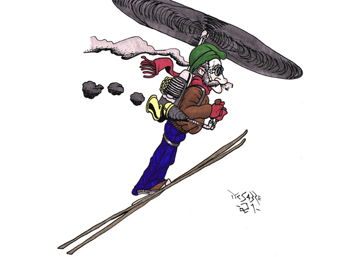

Ny rekord i skiflyging i Vikersund!

VIKERSUND/HOKKSUND (Dølingen)
Tilskodarar under prøvehoppa før OL i Vikersund skiflygingsbakke
vart førre helg vitnar til eit hopp av dei sjeldne.
Syver Armobraaten (80) hadde nyleg modifisert ein ryggsekk ved hjelp av ein ombygd versjon av motoren til ein Vincent Black Shadow på 55 hestekreftar,
samt propellen til ein gammal Cessna 206 og delar ifrå ein "rusten tuba som låg og slang", i følge han sjølv.
Syver hadde på førehand spurt komiteen i skyflygingsbakken om han kunne låne bakken for eit hopp. Komiteen hadde gitt klarsignal,
men problemet låg i kvisleis dato dette skulle gå føre seg.
Det visar seg i etterkant at Syver hadde forveksla månaden, då han eigentelg skulle låne bakken i november, men så var det eine eitt-talet
noko utydeleg, så han hoppa i januar.
Då dagen for testen kom skal Syver ha undra seg over kvifor det var så mykje tilskodarar til stades, men han meinte det berre var
nysgjerrige folk som ville sjå på. Han vart heller ikkje stoppa av sikkerheitsmannskap, sidan han hadde skrifteleg bevis.
Sikkerheitsmannskapet rekna med at alt var i orden og at Syver skulle være med i pauseinnslaget.
Med den spesielle ryggsekken landa han langt over gamle rekorden, som var på 253,5 meter. Etter å ha vorte plukka opp i Hokksund
forklara han at det berre var ein test og aldri meint å setje nokon rekord.
Då han hoppa fekk han ein lei sidevind i frå nord som gjorde at han byrja å sveve mot Geithus, for deretter å følgje
Drammenselva, slik at han då til slutt landa utanfor Hokksundhallen.
Etter ein del finrekning har ekspertar kome fram til at han hoppa omlag 21,6 km, med sidevind vel og merke.
-Om rekorden vert offisiell er vel noko uvisst,
seier Ståle Kvifte, leiar av hoppkomiteen, sidan hoppet byrja i bakken, men vart avslutta bort på Hokksund.
Om Syver skal prøve seg på ein ny rekord er uvisst, sidan ryggsekken brukte opp alt drivstoff i løpet av turen.